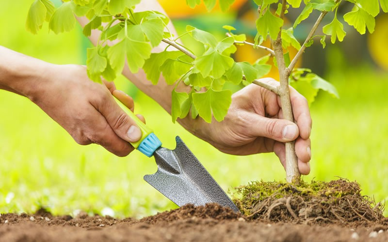

Посадка деревьев и кустарников – одна из самых важных операций в их выращивании. Во многом именно от нее зависит, превратятся ли саженцы в прекрасные растения или приобретут жалкий вид, а то и вовсе погибнут. Разберемся в причинах, определяющих успешность посадки и пересадки. Первостепенное значение имеют: выбор места посадки и здоровых саженцев, приспособленных для данной климатической зоны; грамотное проведение посадочных работ в оптимальные сроки; правильный последующий уход. Время для посадки  Весной следует торопиться: когда на побегах саженцев начнут разворачиваться листья, их приживаемость резко снижается. Поэтому весенний посадочный бум стремителен и скоротечен. Более размерен и основателен осенний период посадки. Питомникам невыгодно оставлять саженцы в полях, поэтому осенью ассортимент посадочного материала самый богатый и есть возможность выбрать самое лучшее. Речь идет о саженцах с открытой, высвобожденной от земли корневой системой. В таком состоянии в сухую погоду они могут находиться на открытом воздухе не более 15 минут, по истечении которых нежнейшие корневые окончания (основа корневой системы), всасывающие воду, начинают высыхать и отмирают. Поэтому, приобретая посадочный материал с открытой корневой системой, нужно заранее позаботиться о его защите от иссушения и запастись подходящей тарой. Кустарники лучше сажать осенью, а деревья – весной. Правило это основывается на том, что кустарники, высаженные ранней осенью (в течение сентября), успевают до зимних холодов укорениться на новом месте, а деревья не успевают и повреждаются зимой морозами. Поэтому саженцы деревьев лучше оставить в прикопе до весны.